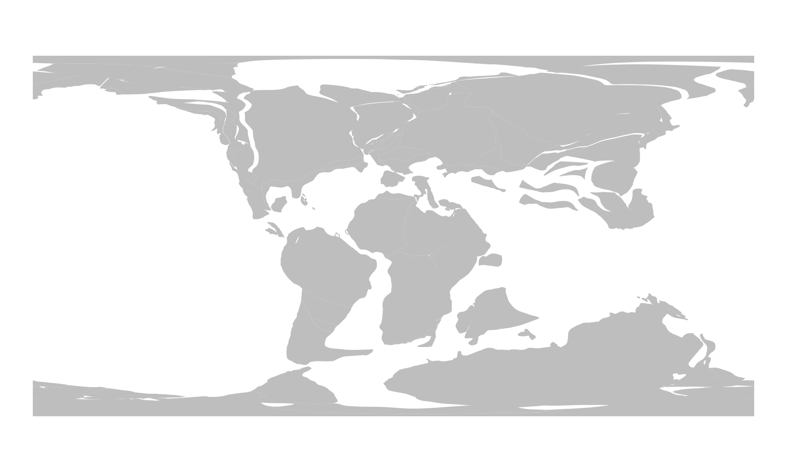
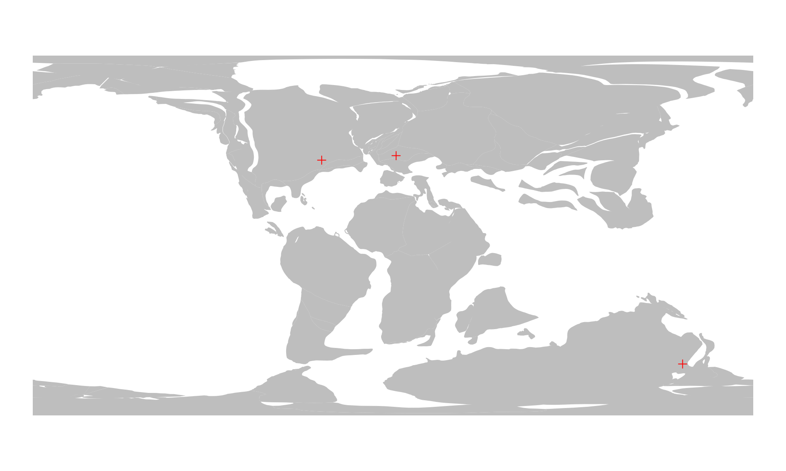

3. Offline reconstruction
Source:vignettes/4_offline_reconstruction.Rmd
4_offline_reconstruction.RmdAlthough the online reconstruction method can help with getting through quick calculations, the true power of the rgplates package lies in what we call the offline reconstruction method.
Introduction
Instead of relying on connections to the GPlates Web Service, the offline method, allows you to execute plate tectonic rotations locally, on your computer. For this, you need two things present on your computer besides the rgplates package:
- The GPlates desktop application, to calculate the reconstructions
- The actual tectonic model files, that you do the reconstructions with.
The GPlates desktop application

GPlates is the current standard program that we used to build, manipulate and employ plate tectonic reconstructions. GPlates has a very well developed Graphical User Interface (GUI), that you can use indepenently from anything in this tutorial. If you wish to learn more about GPlates itself, you can find a lot of material here.
You will not have to leave the R environment or use the GUI of GPlates in order to use the offline method ofrgplates. You just have to make sure that the application is installed on your computer, and rgplates will take care of the rest.
Installing GPlates
Besides installing the rgplates package, you will have to install the GPlates Desktop Application on your computer. After seeing which file you need on your operating system, you will have to scroll down to the bottom of the page, select which file you wish to download and follow the instructions.
This has been tested on all major operating systems (Windows, Mac, and GNU/Linux), and has been working reliably with GPlates versions v2.2 and v2.3. rgplates will be able to find the GPlates installation on Mac and GNU/Linux out of the box. There also should not be any issues on Windows, as long as you install GPlates to the default installation directory (do not change what is suggested during installation - unless you are asking for trouble!).
The tectonic models
To use the offline method, you have to have a tectonic model on your computer. Actually, there is no such thing as a plate tectonic model. From the technical point of view, every model consists at least two data items:
- the Partitioning polygons
- and the Reconstruction tree (aka. rotation file)
The partitioning polygons are vector spatial data (polygons) that represent the present-day distribution of the tectonic plates. GPlates moves these polygons on the surface of Earth with rotations that are described in the reconstruction tree. These are typically developed together (which we usually refer to be a model), but they are stored separately in different files. In other words, GPlates is only the program to execute the rotations/reconstructions, but you also need to have the files
The online method relies on files that are on the servers of the GPlates Web Service. For instance, the partitioning polygons of the PaleoMAP model are visible if you just ask for the "plates", the the present-day as age (i.e. 0Ma).
# attaching the package is necesary for both methods
library(rgplates)
#> Loading required package: sf
#> Linking to GEOS 3.10.2, GDAL 3.4.1, PROJ 8.2.1; sf_use_s2() is TRUE
# this is still the online method:
partPol<- reconstruct("static_polygons", age=0)
# these are the partitioning polyongs visualized
plot(partPol$geometry)In order to use the offline method we need to
- have both the partitioning polygons and the reconstruction tree on our computer,
- represent them in R,
- pass them to the
reconstruct()function.
Model files
For the sake of making the first trial simple, we will be using model files of the PaleoMAP project, that are distributed with the rgplates package.
These files are in the package’s install directory in a zip archive. What we will do is:
- Create a new temporary directory to store our model files
- Unzip the model files there and
- load them into R.
Note: there are even simpler ways to get these files and represent them into R in other ways (such as with the chronosphere, that we will look into in Tutorial 4.) but for didactic purposes, I recommend doing this first with the way that follows.
Temporary directory
Temporary directories are the best places to store transient data, files, that are created during a cacluation and which are not necessary outside your R session (of course you don’t need to store these here, you can use any directory on your computer).
Temporary directories are easy to create, you just have to use the tempdir() function, which will create such a directory for you, and also tell you where to find it:
td <- tempdir()
td
#> [1] "/tmp/Rtmpji3d6F"Each operating system handles these differently, so don’t be surprised if yours don’t match the result above - actually, this will likely be different in every session when you run the function above.
Unzipping the model
The files of the model are quite big, bigger than what is recommended by the CRAN guidelines, so they had to be compressed. We will have to unzip these using the unzip() function - but first we have to find where they are.
The path to the R packages’ installation can be found using the system.file() function.
# the path to the rgplates package
rgPath <- system.file(package="rgplates")You can confirm that this is the right path by listing out the contents of this directory with list.files()
list.files(rgPath)
#> [1] "CITATION" "data" "DESCRIPTION" "extdata" "help"
#> [6] "html" "INDEX" "LICENSE" "Meta" "NAMESPACE"
#> [11] "NEWS.md" "R"The model data are in the extdata directory, in the archive paleomap_v3.zip. We have to locate this archive and extract it to the temporary directory (the exdir argument)
You can confirm that the extraction has indeed happened by looking into the temporary directory:
list.files(file.path(td))
#> [1] "file23b291b9bfa78" "file23b292f02f0ca"
#> [3] "file23b2953970cf8" "file23b2977631f63"
#> [5] "file23b29776a1e35" "file23b298549006"
#> [7] "PALEOMAP_PlateModel.rot" "PALEOMAP_PlatePolygons.gpml"
#> [9] "PALEOMAP_PoliticalBoundaries.gpml" "rmarkdown-str23b292c801659.html"There are two files that are important for us: the one that ends with .gpml (the static plate polygons in GPlates Markup Language format) and the one that ends with .rot (the reconstruction tree/rotation file). We know the absolute paths to these files, they can be found at:
pathToPolygons <- file.path(td, "PALEOMAP_PlatePolygons.gpml")
pathToPolygons
#> [1] "/tmp/Rtmpji3d6F/PALEOMAP_PlatePolygons.gpml"
pathToRotations <- file.path(td, "PALEOMAP_PlateModel.rot")
pathToRotations
#> [1] "/tmp/Rtmpji3d6F/PALEOMAP_PlateModel.rot"The platemodel-class
Now that we have the files and we know how to find them, we have represent them in R in some way, so we can indicate that we want them to be used with GPlates to do our plate tectonic reconstructions.
We need to create a platemodel class object to do just this. All we need to provide, is the paths to these files. The rotation file has a special place in the platemodel object, so that is to be provided separately. The static plate polygons become a feature collection, that has to be named. To make the interface behave the same way in the online method this will be called "static_polygons":
pm <- platemodel(
features=c("static_polygons"=pathToPolygons),
rotation=pathToRotations
)
pm
#> GPlates plate tectonic model.
#> rotation: "PALEOMAP_PlateModel.rot"
#> static_polygons: "PALEOMAP_PlatePolygons.gpml"This is a platemodel-class object, which is actually nothing else but a thin wrapper that includes where the files are actually located.
Now is a great time to mention that this is where the true flexibility of the offline method lies. You can use any third party model files here, as long as you provide the appropriate absolute paths to the files, the methods that follow should work. See more about this below
Reconstructing the plates
The recontruction itself works the same way, as with the online method, the only difference is that instead of using a string for the model argument (which defaults to "MERDITH2021"), we will use the platemodel-class object pm.
Here are the plates reconstructed for 100Ma with the PaleoMAP model - now calculated with the offline method:
plOff100 <- reconstruct("static_polygons", age=100, model=pm)
plOff100
#> Simple feature collection with 176 features and 17 fields
#> Geometry type: GEOMETRY
#> Dimension: XY
#> Bounding box: xmin: -180 ymin: -90 xmax: 180 ymax: 90
#> Geodetic CRS: WGS 84
#> First 10 features:
#> APPEARANCE DISAPPEARA PlateID NAME DESCR PLATEID2 GPGIM_TYPE
#> 1 0 0 307 <NA> <NA> 0 gpml:UnclassifiedFeature
#> 2 0 0 317 <NA> <NA> 0 gpml:UnclassifiedFeature
#> 3 0 0 318 <NA> <NA> 0 gpml:UnclassifiedFeature
#> 4 0 0 318 <NA> <NA> 0 gpml:UnclassifiedFeature
#> 5 0 0 324 <NA> <NA> 0 gpml:UnclassifiedFeature
#> 6 0 0 325 <NA> <NA> 0 gpml:UnclassifiedFeature
#> 7 0 0 326 <NA> <NA> 0 gpml:UnclassifiedFeature
#> 8 0 0 327 <NA> <NA> 0 gpml:UnclassifiedFeature
#> 9 0 0 328 <NA> <NA> 0 gpml:UnclassifiedFeature
#> 10 0 0 332 <NA> <NA> 0 gpml:UnclassifiedFeature
#> FEATURE_ID RECON_METH L_PLATE R_PLATE
#> 1 GPlates-a074f39a-5707-40a6-a430-f83bfe15b2f9 <NA> 0 0
#> 2 GPlates-3abdf9a1-c4c8-4def-8c86-2b25b95269fe <NA> 0 0
#> 3 GPlates-c84f234b-adbd-4f52-9405-1c9e069a6a2c <NA> 0 0
#> 4 GPlates-98e4413f-494d-4b32-9948-6f223204fd38 <NA> 0 0
#> 5 GPlates-d310c935-1c98-4d05-b25b-7850edf1f2d9 <NA> 0 0
#> 6 GPlates-9fbf671b-ac6a-4c2c-8112-9b50a66bff4b <NA> 0 0
#> 7 GPlates-1fac7bb6-1a17-40aa-8311-49de470f27c2 <NA> 0 0
#> 8 GPlates-9aef7a27-3c7b-4dfa-bd69-dfd9d0fe02b1 <NA> 0 0
#> 9 GPlates-8028caed-9793-4a4b-9f52-065907811953 <NA> 0 0
#> 10 GPlates-6d7476bd-7ff6-4c6d-b1a7-5e617e21844c <NA> 0 0
#> SPREAD_ASY TYPE PLATEID1 FROMAGE TOAGE IMPORT_AGE
#> 1 0 <NA> 307 0 0 NA
#> 2 0 <NA> 317 140 0 NA
#> 3 0 <NA> 318 140 0 NA
#> 4 0 <NA> 318 140 0 NA
#> 5 0 <NA> 324 120 0 NA
#> 6 0 <NA> 325 140 0 NA
#> 7 0 <NA> 326 140 0 NA
#> 8 0 <NA> 327 160 0 NA
#> 9 0 <NA> 328 100 0 NA
#> 10 0 <NA> 332 100 0 NA
#> geometry
#> 1 MULTIPOLYGON (((18.777 14.8...
#> 2 MULTIPOLYGON (((-11.93605 4...
#> 3 MULTIPOLYGON (((-12.35329 4...
#> 4 MULTIPOLYGON (((-10.12266 4...
#> 5 MULTIPOLYGON (((0.3944122 5...
#> 6 MULTIPOLYGON (((-9.975426 4...
#> 7 MULTIPOLYGON (((-7.277245 4...
#> 8 MULTIPOLYGON (((3.206152 50...
#> 9 MULTIPOLYGON (((1.64657 31....
#> 10 MULTIPOLYGON (((0.4759208 3...Note that this is a similar sf class object that we saw earlier with the online method, although it has somewhat more attributes. Nevertheless, you can visualize it the same way, using plot().
plot(plOff100$geometry, border=NA, col="gray")
Reconstructing points
Reconstructing the positions of points is similar to that of the online method. Again, the only difference is that you have to provide the platemodel object as the model argument. Here is the example from earlier to calculate and visualize past positions of some cities, now with the offline method:
First, we get the data of localities:
london <- c(-0.38, 51.52)
sydney<- c(151.17, -33.85)
montreal<- c(-73.61, 45.52)
# all cities in a single matrix
cities<- rbind(london, sydney, montreal)
#optional column names
colnames(cities) <- c("long", "lat")
cities
#> long lat
#> london -0.38 51.52
#> sydney 151.17 -33.85
#> montreal -73.61 45.52Second, we reconstruct with our model
cities100 <- reconstruct(cities, age=100, model=pm)
cities100
#> paleolong paleolat
#> london 1.550889 39.94383
#> sydney 144.703860 -64.28464
#> montreal -35.631821 37.69961And then we plot:
# the background map
plot(plOff100$geometry, col="gray", border=NA)
# the reconstructed cities
points(cities100, col="red", pch=3)
Note: in order to to this, a plateID needs to be assigned to every point. We use the partitioning argument to select which feature collection of the platemodel object will be used as partitioning polygons. This defaults to "static_polygons" (check out the documentation of reconstruct()!), so we did not have to say anything here. For other platemodel objects, you might need to set this explicitly!
Alternative ways to get model files
The model files are available from the EarthByte Resources page. For instance, the files of the PaleoMAP model that we used here, are available at: https://www.earthbyte.org/paleomap-paleoatlas-for-gplates/.
On the bottom of the page, you will find a single link : Link to rasters, reconstruction files and tutorial which will allow you to download the Scotese_Paleoatlas_v3.zip file. In this zip file, in the directory PALEOMAP Global Plate Model, you can see the same files that we had earlier:

The contents of the archive
You can use these, or any similar files to create platemodel objects, as long as you provide the absolute paths to the files.
The chronosphere
As you can see, handling these files are quite tedious, and we, the developers of rgplates, barely ever use these in such a way. For practical applications we recommend using the offline method of rgplates with the chronosphere, which you can learn more about in the next tutorial: 5. Reconstructions with the chronosphere.